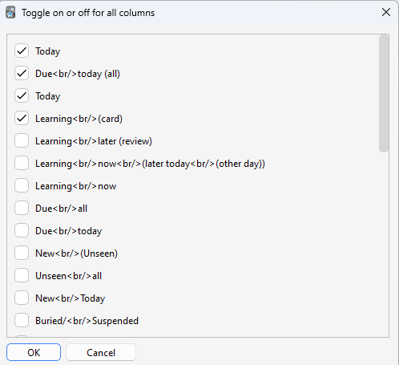

📊Enhance main window
AnkiWeb Page | Code : 911023479
This add-on is a fixed and customized version of the "Enhance main window" for Anki24+ (Fork), most parts of the code are credited to the author Arthur Milchior. This custom version fixes bugs, enhances the user interface, and added some new columns.
Original Add-on: Enhance main window / Author : Arthur Milchior

- 📊Enhance main window
- Options
Basic how to use
These descriptions are based on the original Enhance main Window description.
Drag and drop

- Columns can be rearranged by drag and drop.
Click Menu

Click on a Column to open a menu.
- ⚙️Custom
- Open the options for the currently selected Column.
- ✅️All colums
- Clicki the button open a window and you can change to show or hide all the columns. -> Toggle on or off all columns
- 🗑️Delete Column
- Columns that have been deleted can be redisplayed from the options.
- Custom -> Global 1 -> Toggle on off all columns
Config
- If you want to edit the json directly or reset the settings, open Config from Tools.
- Tools -> Add-ons -> Enhance main window -> Config
Options

Name of selected column
The name of the currently selected Column is displayed. Options 1-3 allow you to customize only this currently selected column. If you want to customize another column, close the window and select it again.
Option 1

Show this column
If turned off, the column will not be displayed (It is the same as delete click menu). If you want to display it again, use “Toggle on off all columns” in the Global tab.
Header
You can customize the column header text. If you want to break lines, use <br/>. If empty, the default text is used.
Option 2

Tooltip
Show tooltip
You can show or hide the text shown on mouse hover.
Description
You can customize the text shown on mouse hover.
Color
You can set the color of the numbers in this column.
Option 3

Show percent
Displays percentages. Some columns will always be 100%.
Show absolute numbers
It displays absolute values, not percentages.
Subdecks
When you consider a deck which has subdecks, a true value considers cards in its subdecks; a false value ignores cards in its child subdecks.
Global 1

Toggle on or off all columns
Clicki the button open a window and you can change to show or hide all the columns.

hide values of parent decks
If a deck has children, its number are not shown.
hide values of parent decks when subdecks are shown
Similar to last option, but it hides number only if the subdecks are shown.
Color
Default column color
The color of the content of a deck, if no other color is specified.
Color empty
The color of the names of decks without new cards.
Color empty descendant
The color of the names of decks with a descendant without new cards.
Marked background color
The color of decks who have marked cards but none of its descendants are both ended and have marked cards.
ended marked background color
The color of the decks which have an ended deck with marked cards.
color zero
The color to use for the zero. If it's a string, use always this color. By default in Anki, it's a kind of grey. If you set it to false (default in this add-on), then the zero is not shown at all.
Global 2

Do color marked and Do color empty
This add-on changes the background color of the names of empty decks, decks with empty descendants, and decks with marked cards. You can turn them off with this option.
Dot in numbers
Whether you want a thousand separator for big numbers, such as 34968, to be shown as "34.968" or as "34968".
cap value
By default, without an add-on, Anki never shows numbers greater than a thousand. Instead, it shows 1000+. You can decide to change the thousand to an arbitrary number, or leave this value to null which always show the real value.
End symbol
By default, this symbol is ";". It means that the deck is definitively done, and no new card may ever be added to it. When a deck has this symbol, neither itself nor its descendants will ever be colored.
Given up symbol
By default, this symbol is "/". To the author, it means that no new card will be added because this deck is either too hard, or not interesting enough.
Pause symbol
By default, this symbol is "=". To the author, it means that more new cards will be added later, but right now it does not want Anki to change the color of the deck's name. In a future version, there may be an option to change the color of these decks.
🚨Report
If you have any problems or requests feel free to send them to me.
- 👍️Rate Comment : You can contact me anonymously, and AnkiWeb will send you an email when I reply, a high rating increases priority of development.
- 👩🚀Reddit : You can request me to repair broken Add-ons.
- 🐙Github : Makes it easier to track problems.
- 💖Patreon DM : Response will be prioritized.
📥 How do I install this add-on?
- Copy and paste the add-on code (
911023479) into Anki and you can install it. ( Menu -> Tools -> Add-ons -> Get Add-ons -> Code [ add-on code ] ) - When I develop bug fixes, create new features, or compatibility for New Anki, I will notify you and you can install it.
- Add-ons will be broken when the official Anki gets a major update, so if you like this add-on please support my volunteer development by rating, sharing, and donating. Thank you!